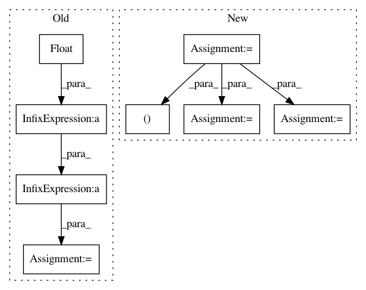

3d5e54b8d683ab0a18210b8d27add5fa35dcb81d,acoular/fbeamform.py,BeamformerFunctional,calc,#BeamformerFunctional#Any#Any#,422
Before Change
kj = 2j*pi*self.freq_data.fftfreq()/self.c
steerVecFormulation = steerVecTranslation(self.steer)
nMics = float(self.freq_data.numchannels)
if self.r_diag:
normFactor = sqrt(1.0 / (nMics * nMics - nMics))
elif not self.r_diag:
normFactor = 1.0 / nMics
for i in self.freq_data.indices:
if not fr[i]:
After Change
fill_diagonal(csm, 0)
csmRoot = fractional_matrix_power(csm, 1.0 / self.gamma)
beamformerOutput, steerNorm = beamformerFreq(False, steerVecFormulation, False, 1.0, (self.r0, self.rm, kji, csmRoot[newaxis]))
beamformerOutput /= steerNorm // take normalized steering vec
// set (unphysical) negative output values to 0
indNegSign = sign(beamformerOutput) < 0
beamformerOutput[indNegSign] = 0.0
else:
eva = array(self.freq_data.eva[i][newaxis], dtype="float64") ** (1.0 / self.gamma)
eve = array(self.freq_data.eve[i][newaxis], dtype="complex128")
beamformerOutput, steerNorm = beamformerFreq(True, steerVecFormulation, self.r_diag, 1.0, (self.r0, self.rm, kji, eva, eve)) // takes all EigVal into account
beamformerOutput /= steerNorm // take normalized steering vec
ac[i] = (beamformerOutput ** self.gamma) * steerNorm * normFactor // the normalization must be done outside the beamformer
fr[i] = True
In pattern: SUPERPATTERN
Frequency: 3
Non-data size: 8
Instances
Project Name: acoular/acoular
Commit Name: 3d5e54b8d683ab0a18210b8d27add5fa35dcb81d
Time: 2018-01-16
Author: tom.j.gensch@campus.tu-berlin.de
File Name: acoular/fbeamform.py
Class Name: BeamformerFunctional
Method Name: calc
Project Name: PIQuIL/QuCumber
Commit Name: 8a14792ce316b5d329650735ab78398e607f4124
Time: 2018-08-17
Author: emerali@users.noreply.github.com
File Name: qucumber/observables/observable.py
Class Name: Observable
Method Name: statistics
Project Name: SpiNNakerManchester/sPyNNaker
Commit Name: ef3b051ba0dc69a02f0d7aa8e955bea26b334f51
Time: 2020-09-30
Author: alan.barry.stokes@gmail.com
File Name: spynnaker/pyNN/utilities/bit_field_utilities.py
Class Name:
Method Name: get_estimated_sdram_for_bit_field_region